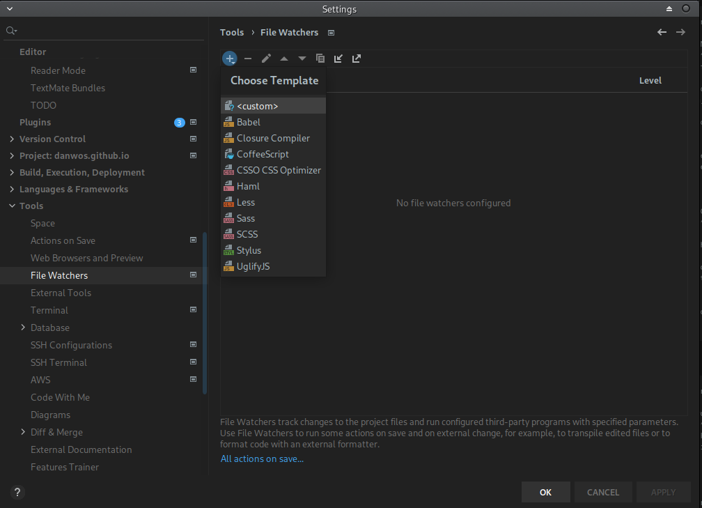
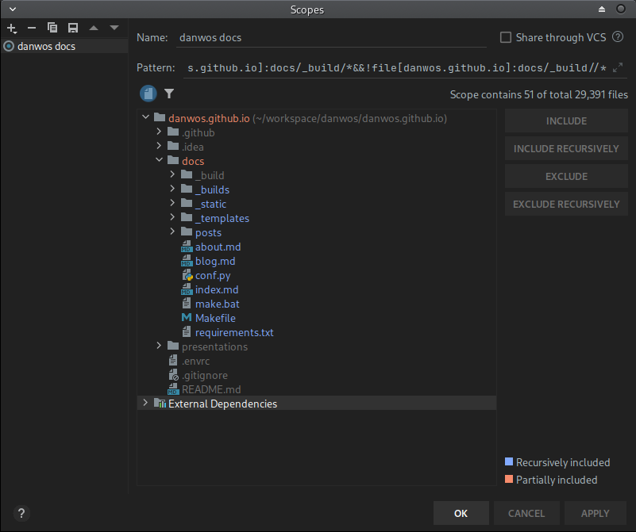
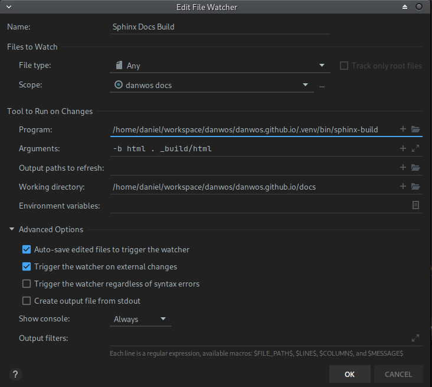
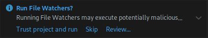

PyCharm File Watchers for Sphinx projects¶
I often have the case that I want to see my documentation as fast as possible.
And I know there are “Preview” IDE-Extensions available, which want to solve this problem.
But the all have one of the following problems:
they often support standard rst-syntax only (so no Sphinx-Extension support).
their preview window is not reachable or positioned they way I need it.
they often force a full build, as their build command is different as the one I normally use.
I need to see the result in a normal browser window with the option to “debug” the site (e.g. to check css configs).
So I came up with the solution to use the build-in File Watcher feature of my PyCharm IDE.
Open File -> Settings -> File Watchers

File Watchers area on the Settings window¶
Create a new watcher (plus sign) and select <custom>.
{kind=link}

File Watcher template selection¶
Set File Type to All.
Configure the project scope. This defines when your watcher gets triggered.
Select your docs folder and press Include recursively.
Then select the _build folder inside docs and exclude it by pressing Exclude recursively.
This step is important, otherwise the File watcher will hang in a loop, as it is changing files under _build,
what would retrigger the watcher.
{kind=link}

Project scope defintion¶
Back to the File Watcher configuration.
Select for Program the sphinx-build command from your used Python Environment.
Set as arguments -b html . _build/html and as Working Directtory the docs/ folder.
Under Advanced Options select Always for Show console.
This helps to see each build result.
{kind=link}

Project scope defintion¶
After storing the config by pressing OK, a small popup shows up in the bottom right corner, asking you to
trust all project file watchers in general.
{kind=link}

Trust File Watchers?¶
That’s it. For sure, you still need to open the generated page in your browser by hand.
How to configure and use PyCharm file watchers to generate Sphinx documentation with ech file change |